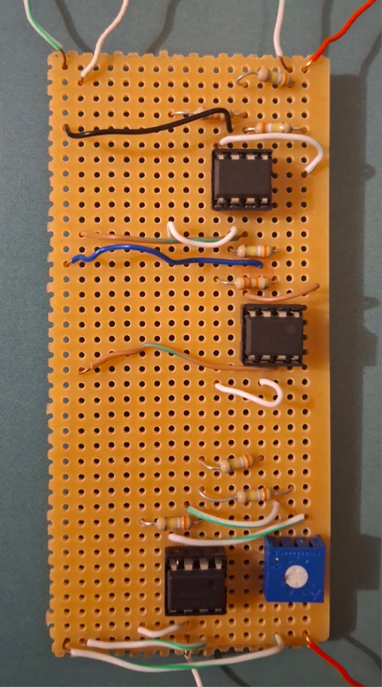
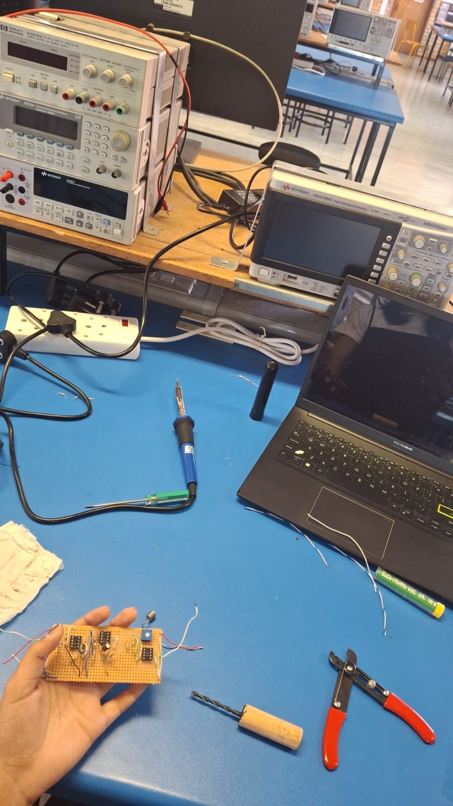

Lead Compensator Circuit
An op-amp lead compensator, hand-built on veroboard, designed to control the altitude of a simulated quadcopter.
What it was
For EEE3094S (Control Systems Engineering), I designed and built an analog lead compensator to replace a simple proportional controller in a simulated altitude-control loop for a quadcopter rig ("KittiCopter"). The proportional controller from the previous lab couldn't meet the tightened specs — under 20% overshoot and settling within 9 seconds while still tracking setpoints to within 0.4 m — so I designed a first-order compensator from a root-locus specification instead.
Working from the desired closed-loop pole location, I calculated the angle contribution needed from the compensator and placed its zero and pole geometrically on the root locus, arriving at C(s) = (1.46s + 1) / (0.231s + 1). I validated the design in Simulink before converting the transfer function into resistor and capacitor values and wiring the circuit by hand on veroboard using OP07 op-amps.
- Derived the compensator's pole/zero locations from settling-time and overshoot specs using root-locus angle criteria, then verified the design and gain in MATLAB/Simulink.
- Converted the transfer function into component values (R1C1 = 1.46, R2C2 = 0.231) and hand-wired the op-amp stages on veroboard.
- Added a small filtering resistor after testing revealed noise on the input reading, stabilising the live signal.
- Bench-tested the built circuit against the KittiCopter simulator: setpoint tracking settled in 7 s and disturbance rejection in 5 s, both inside the 9 s spec, though overshoot came in at 30% against a 20% target — most likely from tolerance stack-up across the series resistor combinations.

